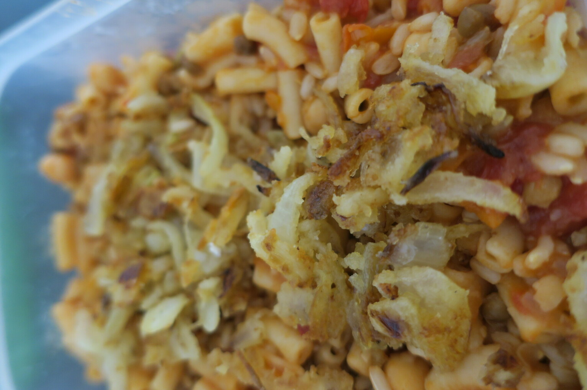

Kushari
 Vegan
Vegan

- 2 cups pasta
- 1 1/2 cups rice
- 1 can chickpeas
- 1 can lentils
- 1 onion
- 4 clove garlic
- chilli
- cinnamon
- 1 can diced tomato
- 2 tbsp white vinegar
- salt & pepper
- 1/3 cup flour
- 1 onion
Cook rice and pasta Brown onion, garlic Add diced tomato, vinegar and spices to sauce Mix rice, pasta, lentils, chickpeas Make fried onion by covering in flour and frying in oil (optionally) top with chicken or lamb
Had this at a local Egyptian place. Still need to tweak the baharat spice blend, as this did not taste as good as theirs.